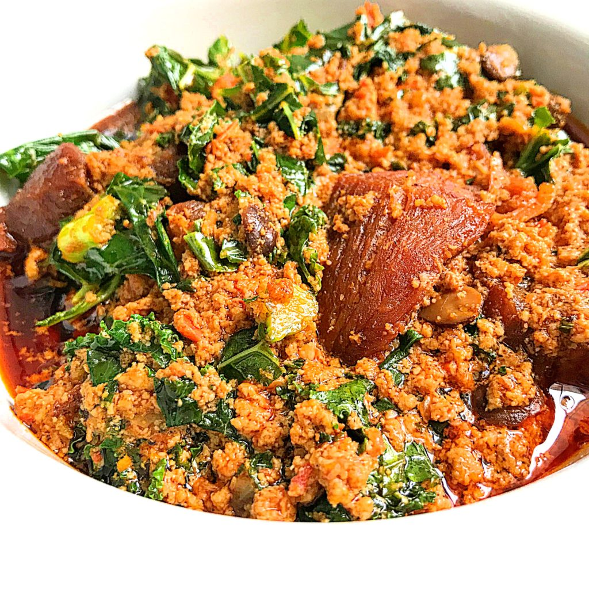

Fun fact about Egusi soup!
The Egusi plant is highly resilient to pests and diseases and is often used as a cover crop, interplanted with maize, cotton, coffee, and bananas to maximize agricultural efficiency. So it's used as a protective older sibling to vulnerable crops!!
-
List of ingredients
- 3 large red bell peppers deseeded
- 2 ata rodo (scotch bonnet peppers or habanero peppers ) add more if you want it more spicy
- 300 g of ground Egusi seeds about 2 cups
- 8 cups (small cup) of meat stock make up with water if meat stock isn't enough
- 250g kale chopped
- 2 large onions divided: chop one up and leave the other for blending
- ¼ cup iru (fermented and processed locust beans)
- 1.1/2 cup palm oil
- 6 Tbsp ground crayfish
- 1 kg assorted meats precooked and fried
-
Pre-preparations and tips
-
Cook the meat you will use:
- Cook and fry the meat you are planning to use.
-
Prepare peppers, kale and onions
- De-seed the peppers, chop the kale & ata rodo and chop one onion.
-
Have a grounder and grounding bowl
- Ground the egusi seeds and crayfish.
-
Have a blender ready
- Have a blender ready to blend ingredients
-
-
Preparation
-
- Blend the red bell pepper, habanero pepper and 1/2 of one onion with little water just enough to help the blender then set it aside.
- Blend the ground Egusi, crayfish and other half of the onion into a thicker paste and set aside.
- Heat up palm oil, sauté chopped onions for about 1 minute the add the washed iru and stir for another 1 minute.
- Pour in the blended bell pepper/habanero/onion mix and stir
- Cook the pepper mix until reduced to a loose paste
- Add the Egusi paste in lumps (refer to process shots in blog post please.)
-
-
Cooking
-
- Turn the heat to low and allow the Egusi lumps to stick to the bottom of the pot. Before stirring.
- When it begins to stick to the pot, stir and fry the Egusi for about 5 mins ( this time you need to stir more frequently to prevent burning.
- Add the meat stock. Taste for seasoning. Adjust accordingly. Allow to cook for for another 10 mins.
- Add the fried meats and stir.
- Add the chopped vegetable, turn off heat and slow residual heat cook the vegetable
- Serve with any swallow food (dough-like food) of choice.
-
-
Cultural Importance
Egusi Soup holds a special place in Nigerian cuisine, symbolizing comfort and community. It is often prepared during festive occasions, family gatherings, and celebrations, showcasing the depth of Nigerian culinary traditions. Each region and ethnic group in Nigeria has its own variation of Egusi Soup, adding to the dish’s rich diversity.

Shown above is one of many ways egusi can be served.